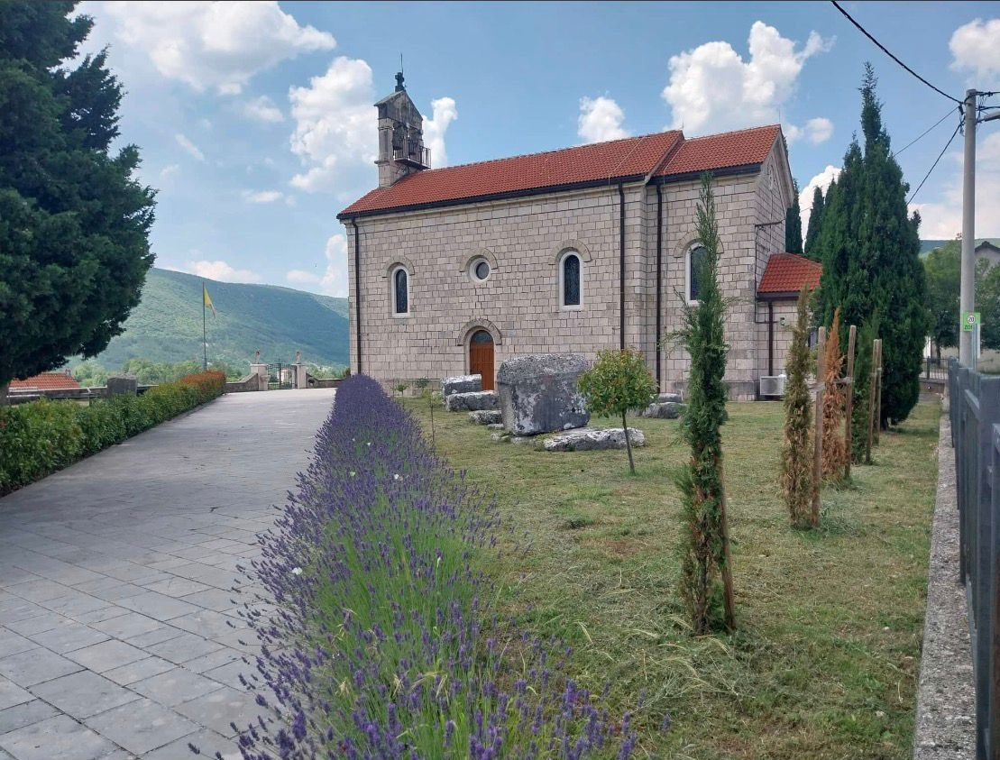
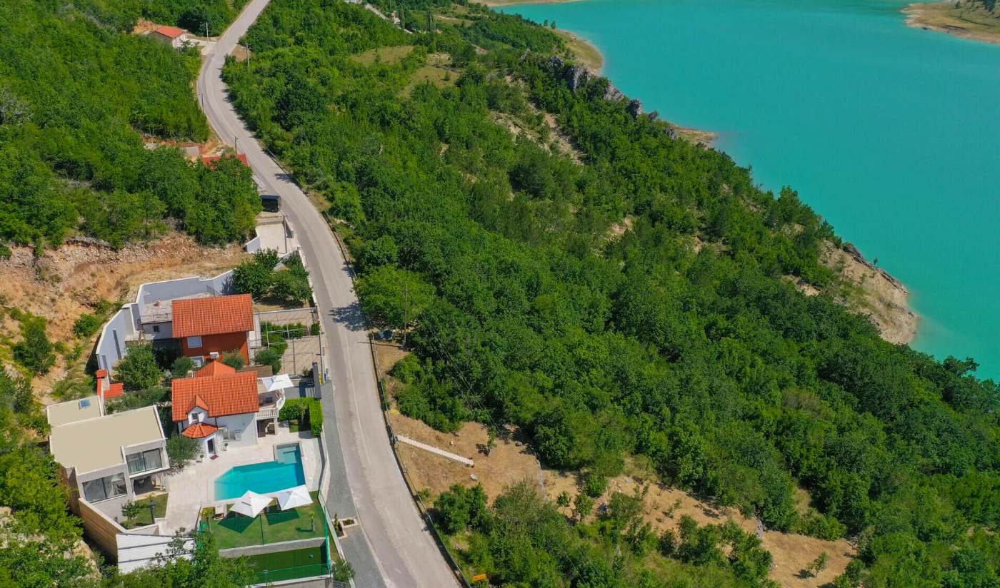
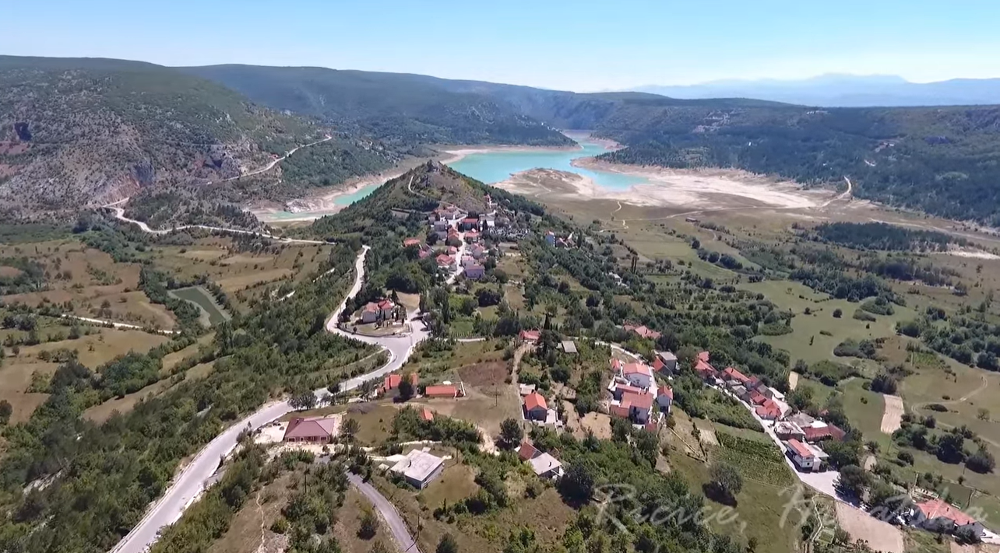

Podrijetlo prezimena Tandara
Uvod
Prezime Tandara pripada skupini starih prezimena Imotske krajine čiji se razvoj može pratiti od prve polovice 18. stoljeća. Premda se danas pojavljuje u Hrvatskoj i među iseljenicima u više europskih i prekomorskih država, njegovi korijeni čvrsto su povezani s područjem sela Ričice pokraj Imotskog.
Povijest prezimena ne može se promatrati odvojeno od povijesti prostora na kojem je nastalo. Zbog toga je za razumijevanje njegova podrijetla potrebno sagledati političke, upravne i društvene promjene koje su zahvatile Imotsku krajinu nakon završetka osmanske vlasti i uspostave mletačke uprave početkom 18. stoljeća.





Imotska krajina u prijelomnom razdoblju
Početkom 18. stoljeća Imotska krajina prolazila je kroz jedno od najvažnijih razdoblja svoje povijesti. Nakon višestoljetne osmanske uprave područje je 1717. godine ušlo u sastav Mletačke Republike. Nova vlast započela je sustavno uređivanje prostora, katastarsku izmjeru zemljišta i uspostavu redovitih župnih matica.
Te promjene nisu predstavljale samo administrativnu reformu nego su uvelike utjecale i na oblikovanje obiteljskih prezimena. Mnogi rodovi upravo u tom razdoblju dobivaju svoj konačni i nasljedni oblik prezimena.
Prezimena tijekom osmanske uprave
Za vrijeme osmanske vlasti stanovništvo se nije popisivalo na način kakav poznajemo danas. U poreznim popisima uglavnom su evidentirani:
- nositelji kućanstava,
- osobna imena,
- povremeni nadimci.
Nasljedna prezimena nisu bila obvezna niti su predstavljala važan element administracije. Zbog toga se ista obitelj u različitim zapisima može pojavljivati pod različitim oznakama, što danas znatno otežava genealoška istraživanja.
Prvi pouzdani trag roda
Najstariji poznati dokument koji se može pouzdano povezati s današnjim prezimenom potječe iz 1725. godine. U njemu se spominje Ivan Tandarić, kojemu je dodijeljeno obradivo zemljište u Ričicama.
Ovaj zapis ima iznimnu vrijednost jer predstavlja prvi čvrsti povijesni dokaz o postojanju roda iz kojeg će nastati današnja obitelj Tandara.
Što govori raspored zemljišta?
Posebno je zanimljivo da zemljišne čestice dodijeljene Ivanu Tandariću nisu činile jedinstvenu cjelinu nego su bile raspoređene na više mjesta unutar sela.
Takav raspored bio je karakterističan za novodoseljene obitelji. Stariji rodovi već su raspolagali većim i zaokruženim posjedima, dok su doseljenici dobivali slobodne čestice koje su preostale nakon prethodne raspodjele zemljišta.
Upravo zbog toga mnogi istraživači smatraju da je rod Tandarić u Ričice doselio neposredno prije 1725. godine.
Od Tandarića do Tandare
Ime Tandarić predstavlja patronimik, odnosno prezime nastalo prema imenu pretka.
Nakon uspostave mletačke uprave započinje postupna standardizacija prezimena. U katastarskim popisima i župnim knjigama sve se češće pojavljuje kraći oblik Tandara, koji tijekom druge polovice 18. stoljeća potpuno prevladava.
Prvi nedvojbeni zapis standardiziranog oblika prezimena potječe iz 1762. godine, kada se pojavljuje u župnim matičnim knjigama.
Moguća starija poveznica s Cistom
Jedan od zanimljivijih tragova vodi prema Cisti, gdje se već 1697. godine spominje prezime Tandar. Iako ne postoji dokument koji bi izravno dokazao genealogijsku povezanost između toga zapisa i kasnijega roda u Ričicama, nekoliko okolnosti upućuje na moguću vezu:
- geografska blizina,
- kronološka podudarnost,
- iznimna rijetkost prezimena.
To ostaje otvorena istraživačka pretpostavka koja zaslužuje daljnja arhivska istraživanja.
Prezime kao dio lokalne povijesti
Do kraja 18. stoljeća prezime Tandara već je bilo čvrsto ukorijenjeno u Ričicama.
Kasniji kartografski izvori pokazuju da je naziv Tandara postao i oznaka dijela sela. Takva pojava nije bila česta te je uglavnom bila vezana uz rodove koji su tijekom više naraštaja ostavili značajan trag u razvoju lokalne zajednice.
Zaključak
Povijesni izvori omogućuju relativno pouzdano praćenje razvoja prezimena Tandara od prve polovice 18. stoljeća. Prvi sigurni zapis iz 1725. godine, postupna zamjena oblika Tandarić prezimenom Tandara, te njegovo konačno ustaljivanje tijekom mletačke uprave predstavljaju ključne točke u razvoju ovoga prezimena.
Premda pojedini stariji tragovi, poput spomena prezimena Tandar u Cisti 1697. godine, upućuju na mogućnost još dubljih korijena, oni za sada ostaju predmet daljnjih istraživanja.
Danas prezime Tandara predstavlja dio povijesne i kulturne baštine Imotske krajine te svjedoči o razvoju jednoga roda čija se povijest može pratiti gotovo tri stoljeća.